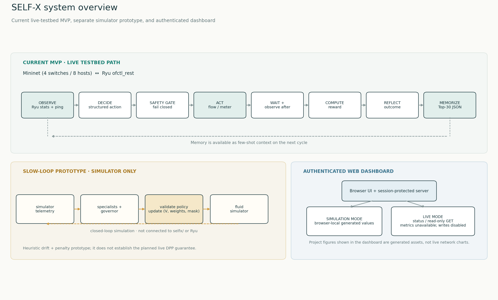
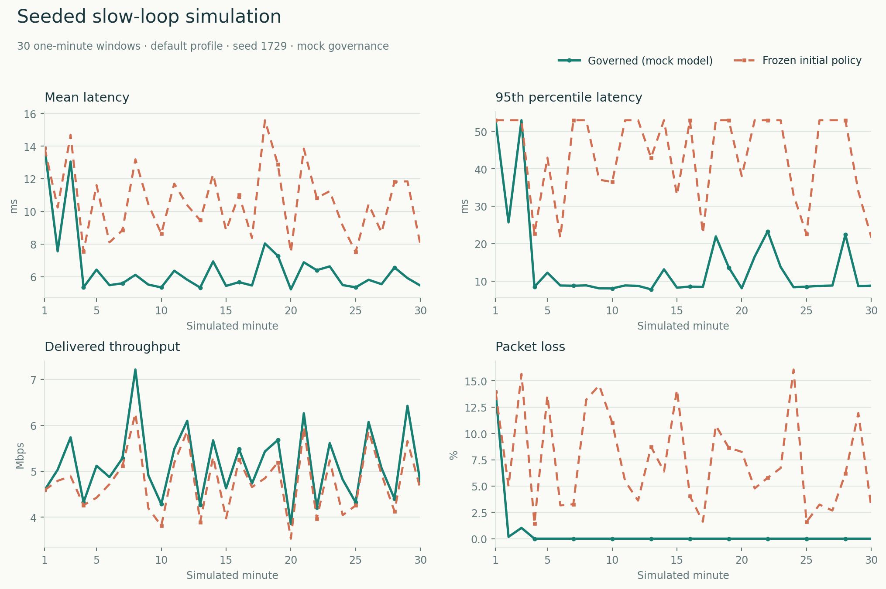
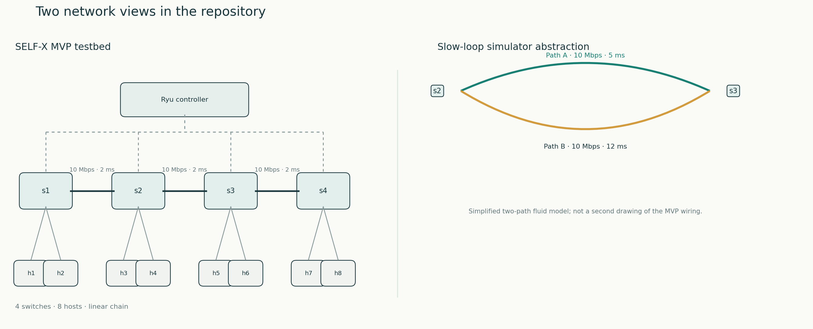
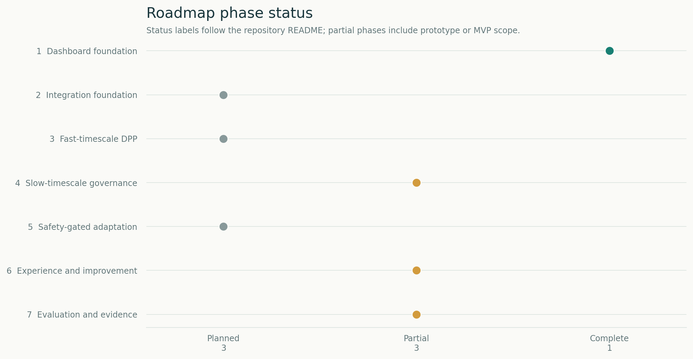
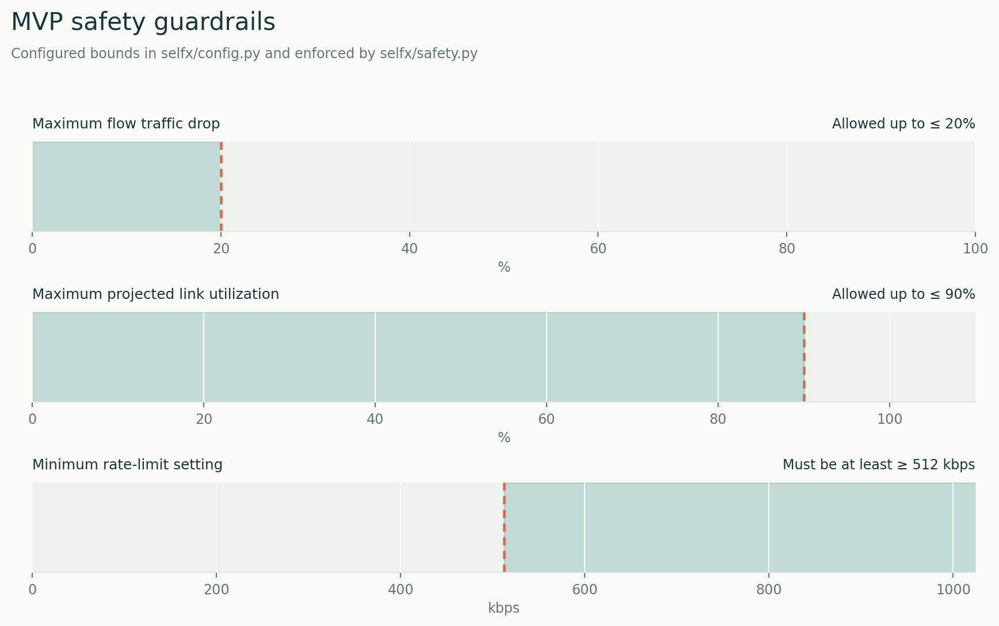

Interactive SDN Telemetry Canvas
Dual Core Bottlenecks between s2 • s3 (Primary 10M, 5ms | Secondary 10M, 12ms)
SELF-X Architecture & Implementation Status
Decoupled slow-timescale LLM governance emitting policy updates ΔΠ = (V, w, M) paired with fast-timescale Lyapunov Drift-Plus-Penalty stability.
| Subsystem | Official Spec Requirement | Implementation in Repository | Verified Status |
|---|---|---|---|
| Slow Governance | 5 Specialist Roles (Traffic, Security, SLA, Topology, Energy) emitting ΔΠ = (V, w, M) | Consolidated prompt schema in selfx/agent/prompts.py; isolated REST API pilot in run_gemini_project.py |
Partially Implemented (Prototype) |
| Fast Control Layer | Lyapunov Drift-Plus-Penalty min [ΔL(Q) + V·P(a)] with bounded backlog B + VC | Simulated in fluid queue model (selfx/eval/simulator.py); not an in-switch OpenFlow pipeline |
Partially Implemented (Fluid Model) |
| Action-Mask Safety | Hard fail-closed constraints: alt util ≤ 90%, drop ≤ 20%, rate floor ≥ 512 kbps | Deterministic checks in selfx/safety.py and rule_demo.py; 0 violations in 86,400 sim windows |
Unit-Tested in Sim (Unverified on Live) |
| Episodic Memory | Nearest-neighbor reflection retrieval to avoid repeated congestion mistakes | Parameter-conditioned memory in selfx/agent/loss_aware_memory.py tested in v4 suite |
Unit-Tested in Sim (Unverified on Live) |
| LoRA Adaptation | Safety-gated online parameter promotion with holdout policy compliance validator | No fine-tuning scripts, trained weights, or weight-promotion pipelines exist in repository | Designed but Not Implemented |
Continuous Telemetry Streams (Sliding 30-Cycle Window)
Real-time visual validation of network stability, throughput gain, and A2 learning progression
End-to-End Latency Progression
Target: < 15 ms under congestionAggregate Network Throughput
Target: > 10 Mbps sustainedPacket Loss Rate
Target: < 1.0% under elephant loadMulti-Objective Reward Curve (A2 Self-Improvement)
R = -0.4·Δlat + 0.4·Δtp - 0.2·ΔlossProject Visualizations
System overview, simulator results, network models, roadmap, and MVP safety limits.
SELF-X system overview
Current MVP, isolated slow-loop simulator prototype, and dashboard data boundaries.

Slow-loop simulation comparison
Governed mock policy compared with a frozen initial policy on the same seeded profile.

Network models
The MVP testbed and slow-loop path abstraction are shown separately.

Implementation roadmap
Phase statuses summarized from the repository README.

MVP safety guardrails
Configured drop, projected utilization, and rate-limit bounds.

Ablation Benchmarks & Saved Experiment Results
Validated evaluation bundles loaded from /api/results. Displays verified run metadata, time series metrics, and condition comparisons.
Primary Benchmark Atlas & Controller Ablation
Empirical evaluation across 8 traffic scenarios, 10 held-out seeds, and 9 controller variants. Includes 95% paired bootstrap confidence intervals.
LLM API Diagnostics (Gemini & OpenRouter Pilots)
Verification of real external LLM API connectivity, latency distributions, deadline misses, and deterministic fallback activation.
Saved Live Experiment Result Bundles
Validated evaluation bundles loaded from read-only /api/results endpoints. When no saved experiment bundles exist, no claims of target latency reduction, backlog bounds, or generalization requirements are made.
No saved experiment results yet
No valid experiment result bundles were found in the results archive. Results will appear here after an evaluation run produces a valid result bundle (run.json, metrics.jsonl, and summary.json).
sudo python -m selfx.eval.run_ablation
The evaluation harness runs conditions A0 (Static Ryu), A1 (Zero-Shot Agent), and A2 (SELF-X Agent) over identical traffic seeds and records structured result bundles to the results archive.
Invariant 1: Max Flow Rate Drop
Hard-coded fail-closed limitRejects any LLM action that drops more than 20% of a critical flow's traffic.
Invariant 2: Max Link Utilization
Congestion prevention boundaryPrevents rerouting traffic onto links that would be pushed above 90% of capacity.
Invariant 3: Minimum Rate Floor
Starvation mitigationGuarantees that a rate_limit action never throttles any flow below 512 kbps.
Active OpenFlow 1.3 Flow & Meter Tables (ofctl_rest)
| DPID | Table | Priority | Match Fields | Action / Instructions | Packet / Byte Counters |
|---|---|---|---|---|---|
| s2 (0000000000000002) | 0 | 100 | in_port=2, ip_dst=10.0.0.8 |
OUTPUT: Port 4 (Secondary Link) |
4,219 pkts / 6.12 MB |
| s2 (0000000000000002) | 0 | 10 | in_port=1, ip_dst=10.0.0.7 |
OUTPUT: Port 3 (Primary Link) |
12,480 pkts / 15.34 MB |
| s3 (0000000000000003) | 0 | 100 | in_port=4, ip_dst=10.0.0.8 |
OUTPUT: Port 1 (Switch s4) |
4,219 pkts / 6.12 MB |
| s1 (0000000000000001) | 0 | 1 | * (Default L2 Forwarding) |
OUTPUT: Port 3 (Inter-switch Trunk) |
18,912 pkts / 23.80 MB |